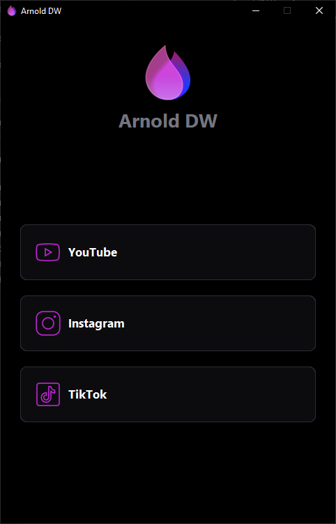

YouTube, tercihlerinle
Videonu önce gör. MP4 için uygun görüntü kalitesini, MP3 için bit hızını seç. İndirme sırasında ilerlemeyi izle veya işlemi iptal et.
MP4MP3ÖnizlemeWINDOWS İÇİN MASAÜSTÜ UYGULAMASI
YouTube videolarını ve Instagram içeriklerini önizle, seç ve bilgisayarına indir. Sade, hızlı, senin kontrolünde.
Windows masaüstü uygulaması · Açık kaynak

DAHA AZ UĞRAŞ, DAHA ÇOK KONTROL
Videonu önce gör. MP4 için uygun görüntü kalitesini, MP3 için bit hızını seç. İndirme sırasında ilerlemeyi izle veya işlemi iptal et.
MP4MP3ÖnizlemeGönderi ve carousel öğelerini tek tek seç. Herkese açık profillerde gönderiler, reels ve profil fotoğrafı kategorilerinden kararını ver.
İndirmelerini istediğin klasöre kaydet. Seçimin bir sonraki açılışında da hatırlansın.
ÜÇ ADIMDA
YouTube videosu veya Instagram gönderi/profil bağlantısını yapıştır.
İçeriği kontrol et, kaliteyi ya da indireceğin öğeleri belirle.
İndirmeyi başlat, ilerlemeyi takip et ve istersen iptal et.
MERAK EDİLENLER
Şu an YouTube tekil videoları ve Instagram gönderileri ile herkese açık profiller destekleniyor.
Varsayılan konum İndirilenler klasöründeki Arnold DW klasörüdür. Uygulamada başka bir klasör seçebilirsin; seçimin hatırlanır.
Hayır. Gizli profillerde yalnızca profil fotoğrafı indirilebilir.
Uygulama GitHub Releases üzerinden dağıtılır. Güncel sürüm ve dağıtım koşulları için Releases sayfasına bak.
Yalnızca sahibi olduğun veya indirilmesine izin verilen içerikleri indir. Platformların kullanım koşullarına uy. Arnold DW, YouTube veya Instagram ile bağlantılı ya da onlar tarafından desteklenen bir ürün değildir. Markalar sahiplerine aittir.
Yasal uyarının tamamı →HAZIR OLDUĞUNDA